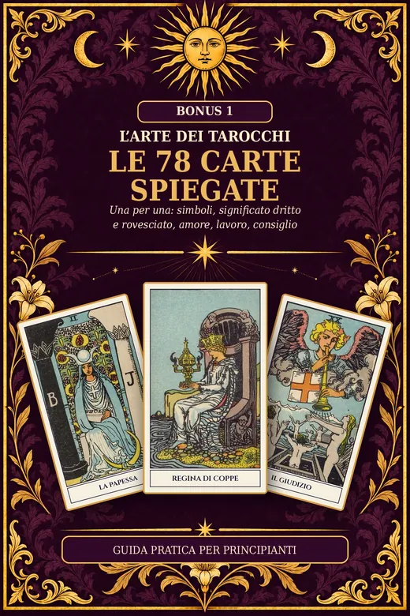
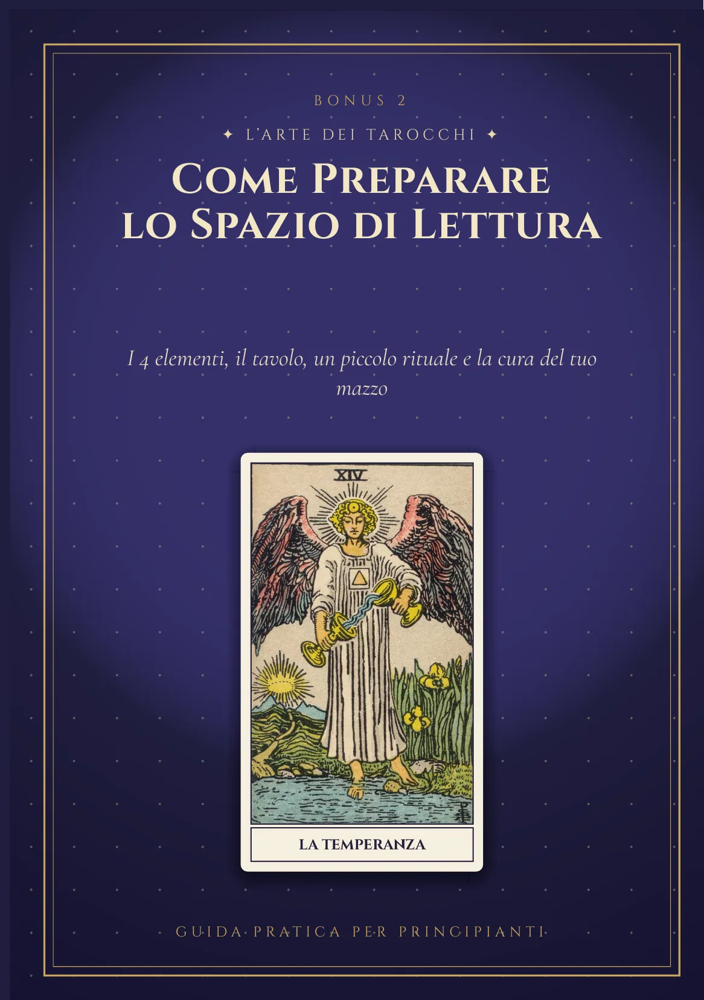
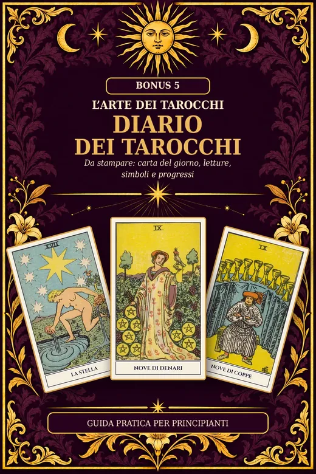

Il metodo guidato
L'Arte dei Tarocchi
Dalla logica del mazzo alla tua prima lettura, con esercizi alla fine di ogni tappa e un piano di pratica di 21 giorni.
Hai curiosità, ma ogni guida che apri diventa una lista di 78 significati. Qui impari la logica del mazzo e, in 7 giorni, leggi le tue prime stese, con le carte già pronte da stampare.
Non devi comprare un mazzo né mettere insieme materiali su più siti. Ricevi tutto nell'accesso, stampi e inizi.
Dalla logica del mazzo alla tua prima lettura, con esercizi alla fine di ogni tappa e un piano di pratica di 21 giorni.

28 pagine A4 pronte da stampare a casa o in copisteria. Il tuo mazzo tra le mani oggi, senza aspettare una spedizione.
Quasi tutti quelli che mollano i tarocchi si bloccano in uno di questi punti.
“Sono 78 carte. Non me le ricorderò mai.”
Nessuno le ricorda. Impari la logica che c'è dietro e consulti il resto quando serve.
“Penso che serva un dono.”
I tarocchi sono un linguaggio di simboli. Ogni linguaggio si impara con metodo e pratica.
“Apro un contenuto e mi perdo ancora di più.”
Le informazioni sparse stancano. Qui tutto arriva in ordine, dal primo passo alla prima stesa.
“So il significato di alcune carte, ma non riesco a collegarle.”
È il blocco più comune. Impari il ruolo di ogni posizione e inizi a leggere le carte come una storia.
“E se esce una carta ‘brutta’?”
La Morte e la Torre parlano di fasi, chiusure di ciclo e cambiamenti. Impari a leggerle con calma.
“Sono scettica/o.”
Nessun problema. Qui i tarocchi servono a fare ordine nei pensieri e a porsi domande migliori, e non richiedono fede.
Ogni seme parla di un'area della vita. Con queste 4 parole apri già 56 carte su 78.
azione, energia, progetti
emozioni, relazioni, desideri
pensieri, decisioni, parole
lavoro, tempo, corpo, risorse
Ti dice a che punto sei: l'Asso è l'inizio, il Cinque la svolta, il Dieci il compimento.
Il Fante scopre, il Cavaliere agisce, la Regina vive dentro, il Re governa fuori.
Le tappe di un viaggio, dal Matto al Mondo. Capitoli di una storia.

22 Arcani Maggiori e 56 Arcani Minori, con i nomi in italiano.
Illustrazioni originali del 1909 di Pamela Colman Smith.

BONUS 1
BONUS 2 BONUS 3
BONUS 3 BONUS 4
BONUS 4
BONUS 5Senza dipendere da nessuno per capire cosa mostrano le carte.
Fare le tue stese
Quando vuoi, per ragionare su una decisione o su una fase, senza chiedere a nessuno.
Leggere con un metodo
Seme, numero e simboli ti danno un percorso. Smetti di cercare ogni carta su Google.
Un momento solo tuo
Qualche minuto con le carte per fare ordine nella testa e vedere la situazione da un'altra angolazione.
Un pagamento unico, senza abbonamento.

Pagamento unico, nessun abbonamento
Accedi a L'Arte dei TarocchiAccedi al metodo, stampa le carte e fai le tue prime stese. Se senti che non era quello che ti aspettavi, chiedi il rimborso direttamente dalla piattaforma di pagamento e ti restituiamo l'intero importo.
Garanzia commerciale volontaria. Restano salvi i diritti previsti dal Codice del Consumo.
Sì. Il metodo parte da zero, con una prima stesa semplice e il passo successivo sempre spiegato.
No. Impari la struttura (semi, numeri, figure, Arcani Maggiori) e consulti i significati quando servono.
No. Servono curiosità e un po' di pratica.
Il metodo è pensato per farti leggere le prime stese in 7 giorni, con i tuoi tempi. Il piano di pratica di 21 giorni ti aiuta poi a prendere confidenza.
No: il mazzo completo di 78 carte è incluso, da stampare a casa o in copisteria. Se hai già un mazzo da 78 carte con Arcani Maggiori e Minori puoi usare anche il tuo: le immagini della guida sono quelle del mazzo incluso (Pamela Colman Smith, 1909), quindi con altri mazzi, per esempio i marsigliesi, qualche dettaglio può cambiare.
Questa guida non promette previsioni. Ti insegna a leggere i simboli delle carte e a usarli come strumento di riflessione e conoscenza di sé.
È un metodo guidato passo dopo passo, con esercizi e carte da stampare. Nessun video, nessun abbonamento. Subito dopo il pagamento ricevi l'accesso via email e stampi tutto quando vuoi.
Hai la garanzia di 15 giorni: chiedi il rimborso e ti restituiamo l'intero importo.
Tra un mese puoi leggere le tue stese, oppure guardare ancora il mazzo senza sapere da dove iniziare.
Pagamento unico, nessun abbonamento
Accedi a L'Arte dei Tarocchi: 19,90 €